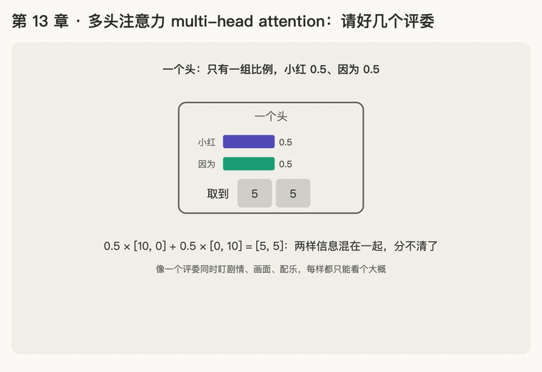

第 13 章 · 多头注意力 multi-head attention
本地运行
git clone https://github.com/wikieden/transformer-visual
cd transformer-visual/code/notebooks
pip install jupyterlab torch numpy
jupyter lab ch13_multi_head.ipynb也可以下载后直接用 VS Code 打开 .ipynb 运行。需要 GPU 的章节在 Colab 里选「代码执行程序 → 更改运行时类型 → GPU」。
本章回答：为什么要同时做好几次 attention（多个"头"）？怎么做？
讲解日期：2026-10-26 · 上一章：第 12 章 转置与公式 1 · 下一章：第 14 章 位置编码
对应原文：materials/text/papers/attention-is-all-you-need-1706.03762.txt§3.2.2，L192–L220（为什么：L207–L208；成本：L218–L220）
本章缩写：Q / K / V = Query（查询）/ Key（键）/ Value（值）；\(d_{model}\)：d = dimension（维度），每个词向量有几个数（论文 512）；\(d_k\)：k = key，每个 key 向量有几个数（64）；\(d_v\)：v = value，每个 value 向量有几个数（64）；MQA / GQA = Multi-Query / Grouped-Query Attention（多查询 / 分组查询注意力）；softmax = soft（柔和的）+ max（取最大）：按大小分比例，不是只挑最大的；CS336 = Stanford 课程 CS 336（Computer Science 336，Language Modeling from Scratch）；代码里的名字（PyTorch、nn.Linear等）见附录"PyTorch 对照"。全部缩写见 附录 · 缩写与术语表
讲解
第一步：为什么一个头不够
一个"头"= 我们第 12 章完整算过的那一套 attention：一组 \(W^Q, W^K, W^V\)，算出一组比例，做一次加权平均。
问题：一个词常常需要同时关注好几样东西。读到"她"时，模型可能既想知道：
- "她"指的是谁 → 应该看"小红"
- "她"前面是什么连接词 → 应该看"因为"（知道这里在讲原因）
可一个头只有一组比例，只能把注意力分开：比如小红 0.5、因为 0.5。按比例取信息（加权平均）时，两边的信息会混在一起。
类比：电影评审。 一个评委要同时盯剧情、画面、配乐，每样都只能看个大概；请三个评委各盯一样，最后把三份意见合起来，每一样都看得清楚。多头注意力就是请好几个"评委"。
练习与作答记录
题 1：设 v（小红）= [10, 0]（第 1 位代表"是谁"），v（因为）= [0, 10]（第 2 位代表"在讲原因"）。一个头只能各给 0.5：\(0.5\times[10,0]+0.5\times[0,10]=\ ?\) 从结果还能看出"她"是小红吗？
作答：[5, 5] ✓（"还能不能看出是小红"没有回答，由讲解补充）
补充：[5, 5] 里两种信息都只剩一半，"是谁"从 10 降到 5，"在讲原因"也从 10 降到 5。两样都看得不清楚，这就是论文说的"单头的加权平均会削弱这种能力"（L207–L208）。
第二步：两个头各管一样，再拼起来
请两个头，各有自己的 \(W^Q, W^K, W^V\)（不同的"评委视角"）：
| 头 | 专门找什么 | 比例 | 取到的信息 |
|---|---|---|---|
| 头 1 | "她"指谁 | 小红 1.0 | [10, 0] |
| 头 2 | 在讲什么关系 | 因为 1.0 | [0, 10] |
两个头的结果首尾接起来（拼接，concatenate，论文写作 Concat），两样信息都完整保留。
题 2：把 [10, 0] 和 [0, 10] 首尾拼接，结果是什么？有几个数？
作答：[10, 0, 0, 10] ✓（4 个数；拼接不是相加，是接在后面）
第三步：论文的数字，以及 \(W^O\)
论文用 h = 8 个头（L218）。每个头的 q、k、v 不再是 512 个数，而是更短：
- 每个头分到的长度 \(d_k\) = ?（见题 3）
- 8 个头的输出拼接起来，长度又回到 512，和原来的词向量一样长，方便后面继续算；
- 拼完再乘一个矩阵 \(W^O\)（O = output），把 8 个头的"意见"混合成最终结果，像主评委汇总各评委的打分。
题 3：词向量有 512 个数，分给 8 个头，拼接后要正好回到 512。每个头的 q 应该有几个数？
作答：64 ✓（512 ÷ 8 = 64）。这就是第 8 章 \(d_k=64\) 的来源。
第四步：多头不多花力气（L218–L220）
- 单头：\(W^Q\) 是 512 × 512。
- 8 头：每个头的 \(W_i^Q\) 是 512 × 64，8 个横着拼起来正好也是 512 × 512。
参数量和计算量与"一个 512 维的大头"几乎一样，只是把 softmax 分成 8 组各自做。白得 8 个视角。
动画演示：一个头分不清，两个头各管一样再拼接

可交互版：animations/13-multi-head.html（要能点按钮、拖滑块，需要用本地服务打开，见 animations/README.md"跑起来看"）。
怎么看：
- 一个头：小红 0.5、因为 0.5，信息混成 [5, 5]；
- 两个头：头 1 全看小红 [10, 0]，头 2 全看"因为" [0, 10]；
- 拼接（Concat）：[10, 0, 0, 10]，不是相加；
- 论文 8 个头 × 64 = 512，再乘 \(W^O\)；8 个 512 × 64 横着拼正好是 512 × 512，参数不多花；滑块：改头数，每个头的长度跟着变，总参数不变。
小结
| 问题 | 答案 |
|---|---|
| 为什么要多头 | 一个头只有一组比例，想同时关注几样东西就只能分着给，信息被稀释（[5, 5]） |
| 怎么做 | 每个头有自己的 \(W^Q, W^K, W^V\)，各算一遍 attention |
| 怎么合起来 | 拼接（Concat）→ 乘 \(W^O\) 汇总 |
| 论文数字 | h = 8，每头 \(d_k = 512 / 8 = 64\)，拼回 512 |
| 代价 | 和单头几乎一样 |
口诀
一头只有一组比，多头各看各的戏；拼回原长再汇总。
本章复习卡片
R24 为什么要多头 · R25 多头怎么做、\(d_k=64\) 的来源（见 ../review.md）
附录 · 延伸阅读
留给以后深入学习用，不影响本章主线。★ 是建议先读的。
- 本地论文的文本版在materials/text/papers/，表里的行号就是指这个文本版。
- CS336 handout 在cs336-spring2025/materials/text/cs336_spring2025_assignment1_basics.txt。
推荐阅读
| 读什么 | 读哪里 | 读它为了什么 |
|---|---|---|
| ★ Attention Is All You Need | §3.2.2，L192–L220；Table 3 (A)（L482） | 原文的多头公式；头数从 1 变到 32 的实验结果 |
| ★ Olsson et al. 2022, In-context Learning and Induction Heads | 前几节对 induction head 的定义 | 头的分工最著名的例子："找上次出现的地方，复制下一个词"（里程碑 T-M2） |
| Michel et al. 2019, Are Sixteen Heads Really Better than One?（arXiv 1905.10650） | 全文 | 训练好后很多头可以去掉，效果几乎不变 |
| Voita et al. 2019, Analyzing Multi-Head Self-Attention（arXiv 1905.09418） | 全文 | 不同的头确实学到了不同的分工（位置、语法、罕见词） |
MQA / GQA（本地 llm-full-stack/materials/papers/inference/） |
方法部分 | 现代模型让多个头共用 K、V，省推理内存（阶段 C） |
| CS336 a1 handout | §3.5.5 Causal Multi-Head Self-Attention | 作业实现 |
| Formal Algorithms for Transformers | Algorithm 5 MHAttention | 多头的伪代码 |
数学原理
- 分块矩阵：把各头结果拼起来再乘 \(W^O\)，等于每个头各自乘 \(W^O\) 的对应一段，再加起来。所以"拼接 + 乘 \(W^O\)"本质上是在把各头的结论加权汇总。
- 参数量与头数无关：\(W^Q, W^K, W^V, W^O\) 合起来始终是 \(4 \cdot d_{model}^2\) 个参数。头数只决定怎么切分，不增加参数。
公式清单
| 公式 | 意思 |
|---|---|
| \(\text{head}_i = \text{Attention}(QW_i^Q, KW_i^K, VW_i^V)\) | 每个头用自己的三个矩阵 |
| \(\text{MultiHead}(Q,K,V)=\text{Concat}(\text{head}_1,\dots,\text{head}_h)W^O\) | 拼接后再乘 \(W^O\) |
| \(d_k = d_v = d_{model} / h = 512 / 8 = 64\) | 每个头的维度 |
| \(4 \cdot d_{model}^2\) | 一层 attention 的参数量（不算偏置） |
PyTorch 对照：把本章的数字用代码算一遍
代码在仓库本地
transformer-deep-dive/solutions/chapter-code/ch13_multi_head.py，配套测试tests/test_ch09_13.py（在线版不带代码文件，下面摘了关键几行）。Mac 上直接能跑，不需要 GPU：
bash cd transformer-deep-dive/solutions/chapter-code uv run python ch13_multi_head.py
讲义 ↔ 代码：
| 讲义 | 公式 / 说法 | PyTorch 写法 | 跑出来 |
|---|---|---|---|
| 一个头会混 | 小红 0.5、因为 0.5 | [0.5, 0.5] @ ... |
[5, 5] |
| 拼接不是相加 | Concat | torch.cat([h1, h2]) |
[10, 0, 0, 10]；相加是 [10, 10] |
| 切成 8 个头 | 每头 512 / 8 个数 | x.view(n, 8, 64).transpose(0, 1) |
(8, 3, 64) |
| 拼回去 | Concat | .transpose(0, 1).reshape(n, 512) |
和原来一模一样 |
| 多头整层 | \(\text{Concat}(\text{head}_1,\dots)W^O\) | 切头 → SDPA → 拼接 → @ w_o |
(3, 512) |
| 参数和头数无关 | \(4 d_{model}^2\) | nn.MultiheadAttention(8, h, bias=False) |
h = 1、2、4、8 都是 256 = 4 × 8² |
关键几行：
q = (x @ w_q).view(n, h, d // h).transpose(0, 1) # n × d → h × n × d_k
heads = F.scaled_dot_product_attention(q, k, v) # 每个头各自 softmax
out = heads.transpose(0, 1).reshape(n, d) @ w_o # 拼接，再乘 W^O
代码里才看得到的：
- 多头只是"换个形状看"：
view把每个词的 512 个数看成 8 段 × 64，不复制任何数；8 个头一起交给 attention，每个头的 softmax 自动各算各的。 view之后transpose再拼回去要用reshape：转置后数在内存里不再按顺序排，view会报错，reshape会在需要时自己复制一份。nn.MultiheadAttention的参数：\(W^Q\)、\(W^K\)、\(W^V\) 竖着摞在一个in_proj_weight（3d × d）里，\(W^O\) 在out_proj里，合起来正好 \(4d^2\)，头数只决定怎么切。